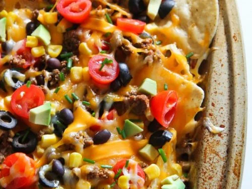

Nachos Recipe

Description
Nachos, oh how underappreciated you are. A delicacy that not only tastes delicious,
but, in my opinion, is among the top three best foods for social gatherings. Inexpensive,
easy to make in bulk, and wait did I mention delicious? After trying this recipe, not only will you
have your friends wanting to come over more often, but you may also become enlightened as your
tastebuds cry of happiness.
Ingredients
- 1 Standard Size Bag of Tortilla Chips
- 1 pound block of cheese such as cheddar Monterray Jack or Colby Jack, shredded
- Optional Topping Such as:
- Seasoned Ground Beef
- Shredded Beef Pork or Chicken
- Black beans or pinto beans
- Tomatoes jalapenos or chilies
- Corn black olives, avocados
Steps
- Preheat oven to 350 degrees F.
- Line a baking sheet with a silicone baking mat or foil.
- Spread chips over cookie sheet.
- Sprinkle half of the grated cheese over the chips.
- Sprinkle toppings over the chips and cheese.
- Sprinkle remaining cheese.
- Bake for approximately 10 minutes, or until cheese is gold and melty.
- Serve warm with sides such as guacamole, sour cream or salsa.